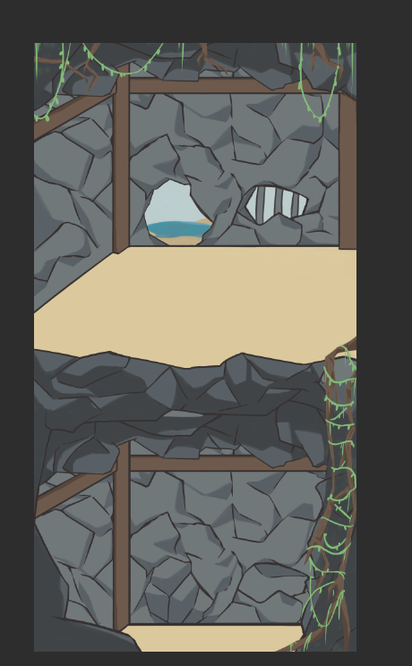
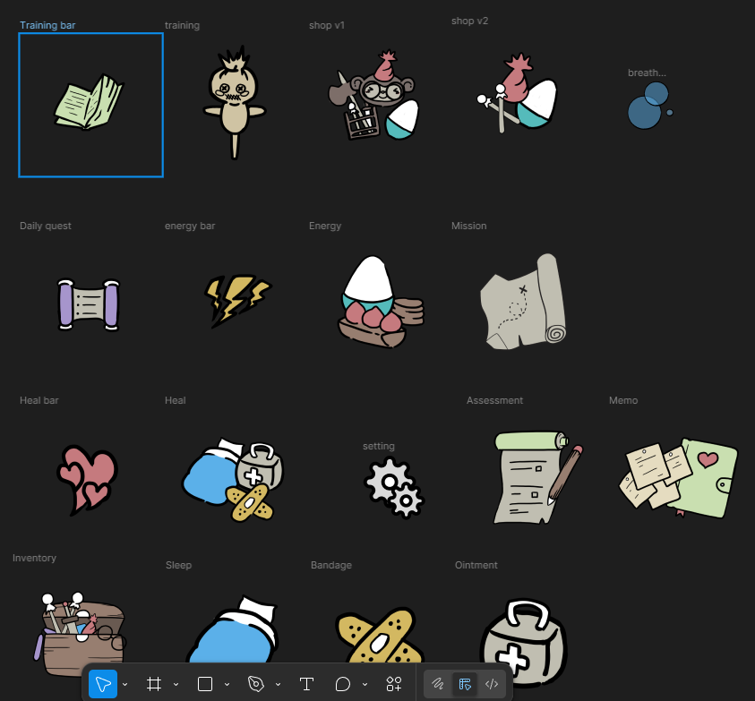
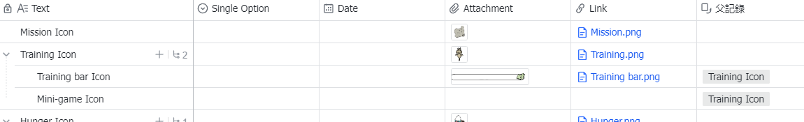
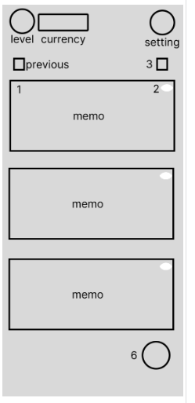
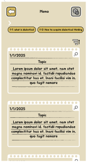
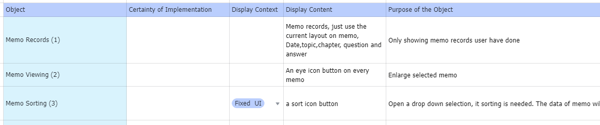
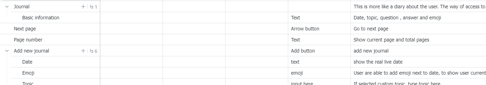
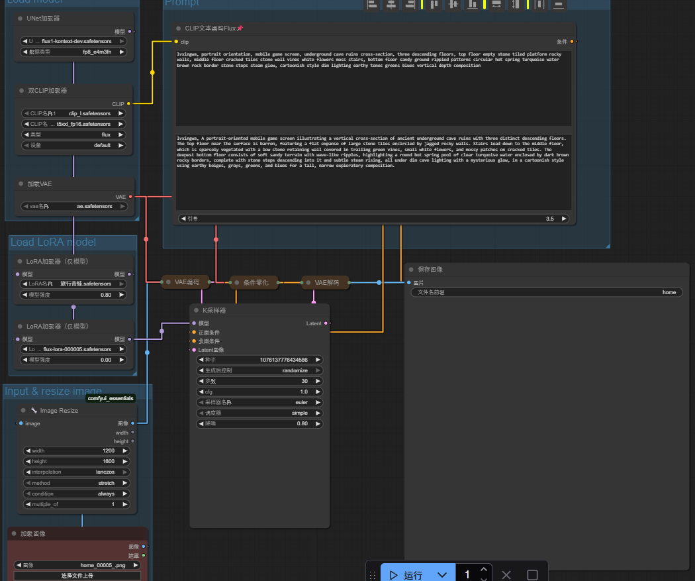
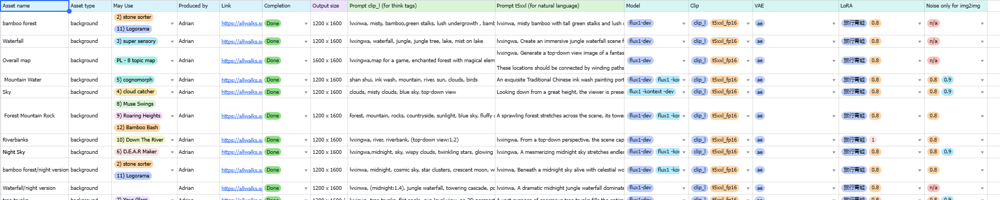
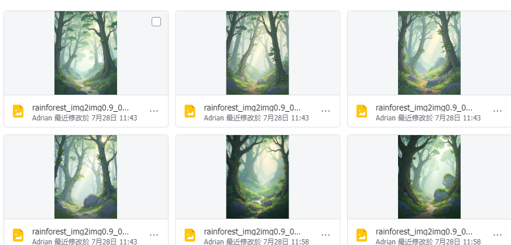

2025 summer 2 June - 29 August
Task 1: "Drawing/design icons and backgrounds"
About this task:
Since we are making a new mobile app, many icons and backgrounds must be drawn. The task is to follow the asset list, draw new assets, and fulfill the design style requirement.
My responsibility:
I follow the asset list and make icons in Figma. For those icons and backgrounds with complicated designs. I drew it on Clip Studio Paint to have a better outcome.
Tools:
Figma and Clip Studio Paint
Outcome:



Task 2: "Feature list and wireframe on screens"
About this task:
Since we are making a new mobile app, we must create a new scene. Each scene will have a different feature for the user to interact with. We also need a wireframe to ensure the features are placed correctly.
My responsibility:
First, I list the features we need in the scene. And put this information and list it out with labels in Excel. After finishing that, I started working on the wireframe. It is a prototype. Boxes are used as UI and labeled with UI names. Have an overall view of the UI. Easy to make small changes or remake the whole thing. After it, I also start working on the document and create a detailed explanation on how the feature works, what happens after the user interacts, what size the UI is, what color, what type of UI it is this UI etc…
Tools:
Figma, Excel from Lark, Word from Lark
Outcome:




Task 3: "AI training and image generation"
About this task:
Our new mobile app has many new assets that must be added. Using generative AI to generate images will help a lot. AI training also stabilizes the outcome and fits our design style.
My responsibility:
First, we need a custom Loar model. The first thing we did was collect artwork with a similar art style, group it, and label it with a description. Labeling will help AI to understand image meaning, and it will increase the model's success. Then I need to use the custom Lora model, which has the image art style we need, and generate images. In our mobile app, there are many mini-games. Each game will have a different theme. So everything should be unique. I must also create a background using AI in ComfyUI and set up a workflow. Using a checkpoint like Flux-Dex, a custom LoRA model, and magic prompts to create AI images.
Tools:
stable diffusion webUI, ComfyUI, KohyaSS
Outcome:



Task 4: "Assets management and export"
About this task:
After we create many assets in Figma. Now needs to be committed to TortoiseSVN. Set up in Unity.
My responsibility:
I needed to export assets from Figma and rename the file one by one into a suitable name. It is for the Unity developer team to understand the assets easily. Next, I group the assets into a folder named by the scene name. Then I commit the folder to TortoiseSVN. I also tested in Unity to ensure the assets I uploaded work fine in Unity.
Tools:
TortoiseSVN, Unity, Figma